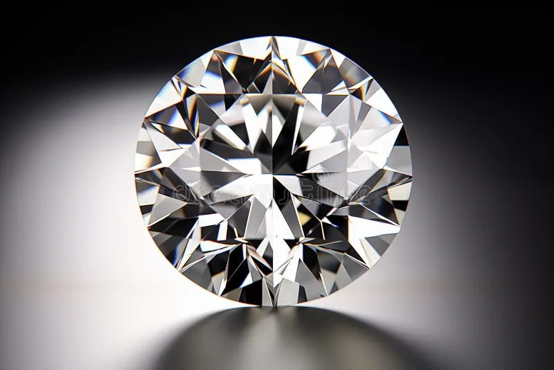
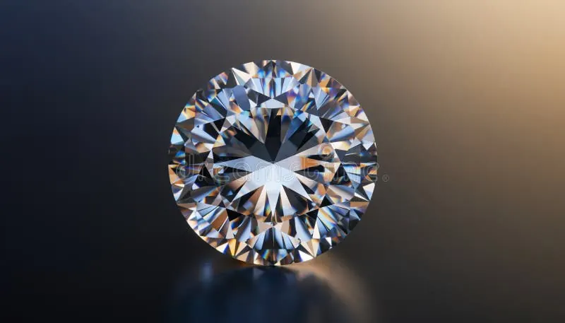

鑽石4C總論：一顆鑽石的四大身分證
鑽石不是「一顆石頭」，而是一張寫滿四欄資料的身分證——克拉、顏色、淨度、切工，讀懂這四欄，你就能看懂全世界鑽石為什麼價差幾十倍。


核心定義
4C 是鑽石產業衡量品質與價格的四把尺：克拉重量（Carat）、顏色（Color）、淨度（Clarity）、切工（Cut）。這套系統由美國寶石學院（GIA）在 1950 年代首創，之後被全球珠寶市場奉為圭臬。它的誕生有劃時代意義：在此之前，鑽石買賣全靠賣家一張嘴，品質好壞沒有統一語言；有了 4C，兩顆鑽石才能像汽車比較馬力與排氣量一樣，放在同一張表格上對決。
請記住一個原則：4C 是「描述」，不是「打分數」。它只告訴你這顆鑽石長什麼樣，至於「值不值得買」，還得看你的預算與喜好——這正是很多人第一次接觸 4C 最常搞錯的地方。
特徵與分類
| C | 衡量什麼 | 常見範圍 | 對價格影響 |
|---|---|---|---|
| Carat 克拉 | 重量（1 克拉 = 0.2 公克） | 0.3–5 克拉以上 | 最直接，且非線性暴漲 |
| Color 顏色 | 無色到淡黃的程度 | D（無色）～Z（淡黃） | 越接近 D 越貴 |
| Clarity 淨度 | 內含物與表面特徵 | FL（無瑕）～I3 | 肉眼無瑕即可，不必追求極致 |
| Cut 切工 | 比例、對稱、磨光 | Excellent～Poor | 唯一由人決定、影響光學表現的 C |
四個 C 各自獨立又互相牽動：同樣一克拉，顏色差一級可能差一、兩成價格；但若是切工從 Excellent 掉到 Good，光澤黯淡，再高的顏色分數也救不回來。
科學原理
鑽石的化學成分其實平凡到令人意外——它只是純碳，和鉛筆芯裡的石墨是同一種元素。差別在於原子排列：鑽石裡的每個碳原子與四周四個碳原子以極強共價鍵形成四面體網狀結構，讓它成為天然界最硬的物質（莫氏硬度 10）。
光學上，鑽石的折射率高達 2.417，色散值（把白光拆成彩虹的能力）約 0.044——兩者相加，就是我們看到的「亮光」與「火彩」。但請注意：這些數值是天生固定的，能不能表現出來，全靠切工。比例不對，光會從底部漏掉，再完美的碳結晶看起來也只是一塊透明玻璃。
鑑定與鑑別方法
- 先看切工比例：檯面比例、冠部角度、亭深是否落在理想區間；用 10 倍放大鏡即可初判。
- 再看淨度特徵：內含物類型（針點、晶體、羽裂）與位置，判斷會不會影響耐久性。
- 比色與比淨度：顏色需在標準光源與比色石下比對；淨度則在暗場與亮場下各有觀察重點。
- 以證書為準：GIA、IGI 等實驗室報告是 4C 的「最終裁判」——肉眼可以感受美醜，但分級數字交給儀器與受訓的鑑定師。
常見誤區
完全錯誤。D 色、IF 淨度、3EX 切工的白鑽，若是一顆 0.3 克拉的檯面比例偏小的小石頭，未必比一顆 H 色、SI1 淨度但切工頂級、火光四射的一克拉更有視覺魅力。鑽石先看「眼緣」，再看「數據」。
兩顆同為 1 克拉的鑽石，價格可能相差五倍以上——顏色、淨度、切工、螢光、證書、有無處理，每一個變數都會改寫價格。只報「幾克拉」的報價，都是話術。
冷知識
古時候商人用角豆樹種子當砝碼秤寶石，這種種子重量出奇地穩定，拉丁文叫 carat。1907 年國際間才統一 1 克拉 = 0.2 公克——在此之前，每個國家的「一克拉」可能都不太一樣。
GIA 當年刻意跳過 A、B、C，直接從 D 開始，就是為了避免舊分級系統的混亂——讓大家「忘掉過去」，重新定義無色標準。
反直覺觀點
克拉是天生、顏色是天生、淨度也是天生，唯有切工是人類工藝的產物。一顆切工普通的 D 色鑽石，看起來會輸給一顆切工絕佳的 I 色鑽石——因為眼睛先看到的是「光」，不是「字母」。預算有限時，把切工排在第一位，是寶石學家公認最划算的選擇。
市場行情與保養建議
鑽石行情依 4C 組合差異極大：以 2026 年的零售參考區間，1 克拉、GIA 證書、H 色、VS2、3EX 的圓鑽約在新台幣 18–35 萬元之間；同條件升到 D 色、IF 淨度可達 60–120 萬元。培育鑽石的出現則把同規格價格壓到天然鑽的兩至三成，市場正在劇烈重組（詳見 培育鑽石 vs 天然鑽石）。
保養上：鑽石親油，指紋與護手霜會讓它「霧掉」，定期用溫水加中性清潔劑浸泡刷洗即可；存放時與其他寶石分開，避免刮傷硬度較低的寶石；運動、做粗活時摘下，別讓「最硬」變成「最容易弄丟」。